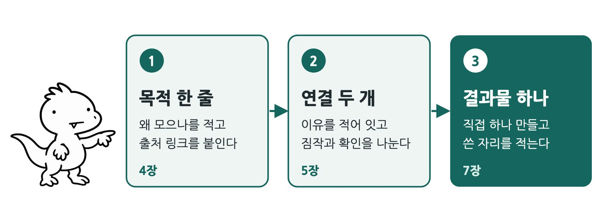
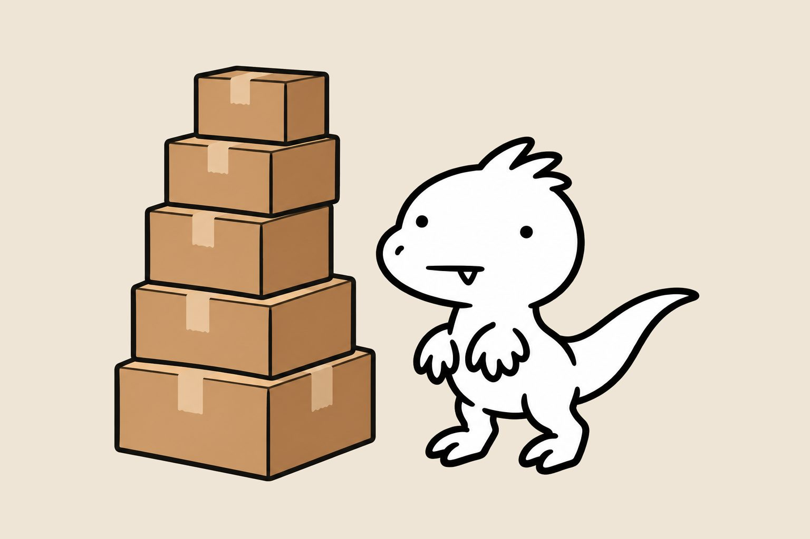
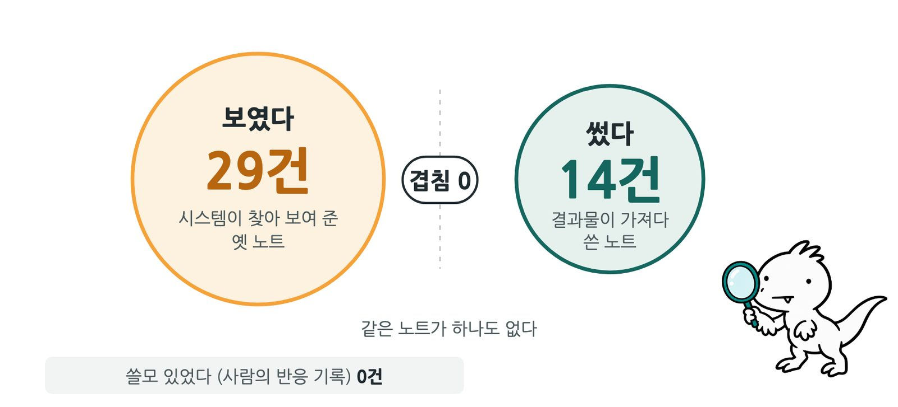
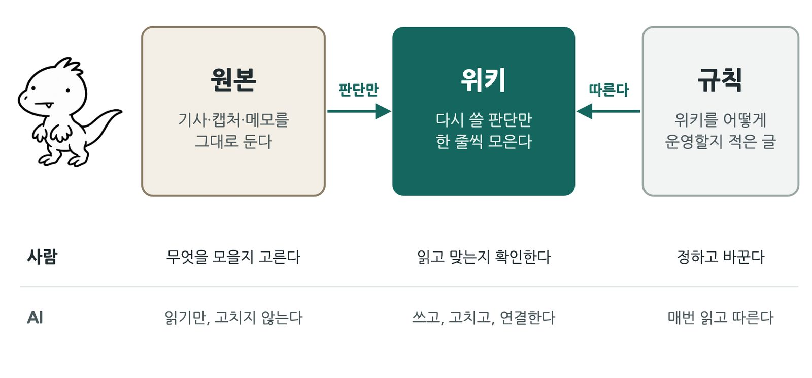
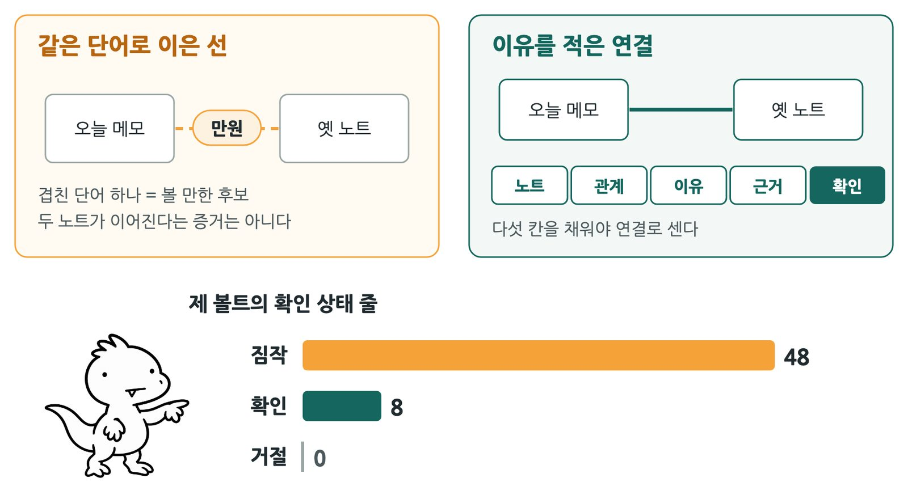
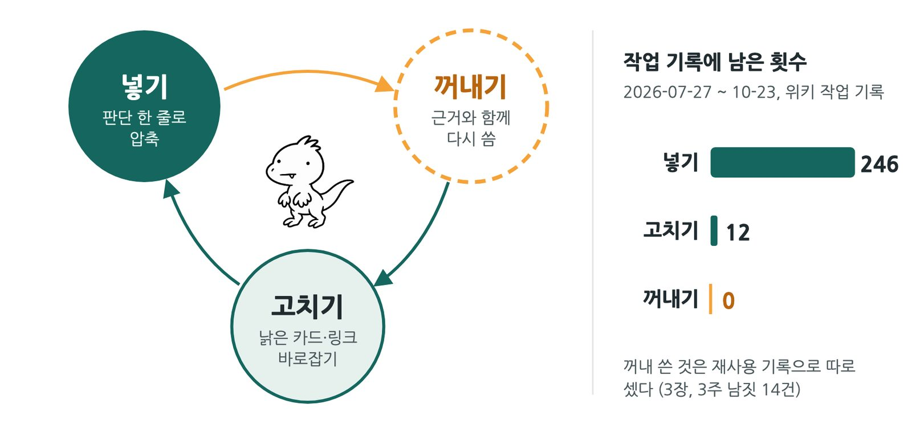
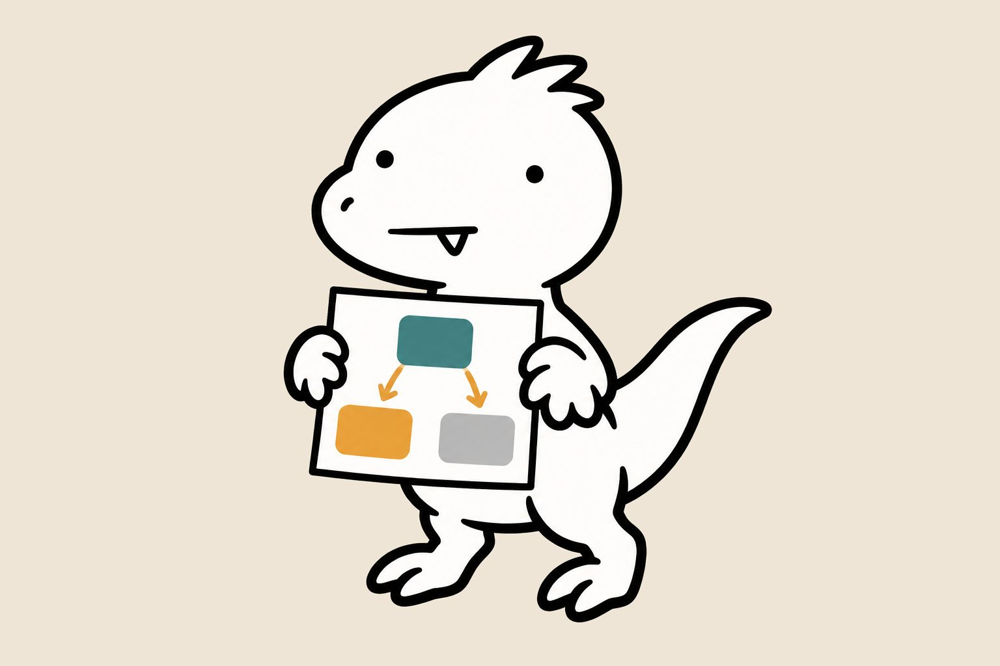
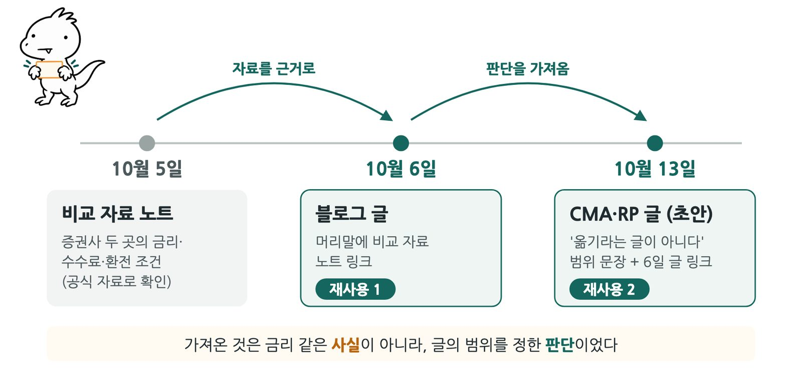
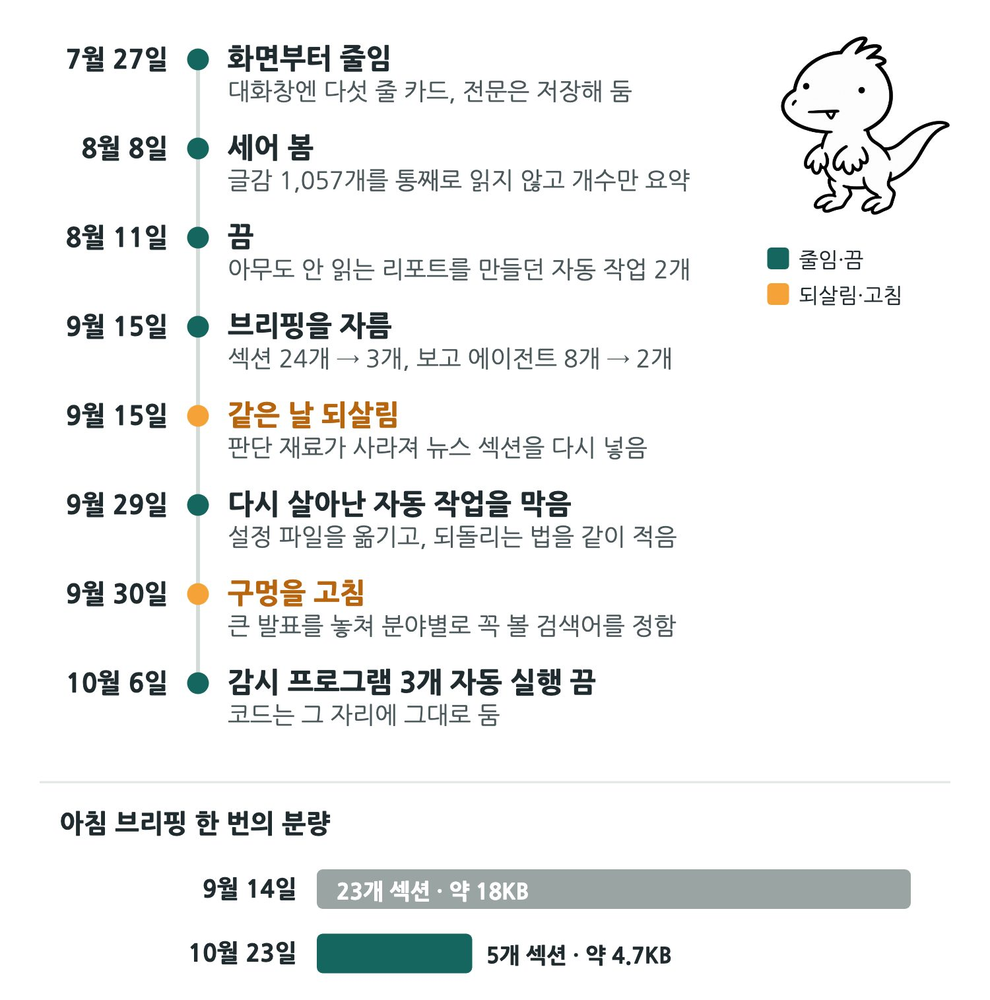

카톡 ’나와의 채팅’에 링크를 보내 두고, 좋은 글은 스크린샷으로 찍어 두고, 인스타 게시물은 저장 버튼을 누릅니다. 요즘은 긴 영상도 AI에게 요약을 시켜 노트에 붙여 둡니다. 저장하는 순간에는 뭔가 해낸 것 같습니다. 그런데 지난달 저장한 것 중 다시 열어 본 건 몇 개나 될까요?
이건 이름까지 붙은 현상입니다. 메모 방법을 다루는 사이트 zettelkasten.de의 크리스티안 티체는 2014년 글에서 이것을 ’수집가의 오류’라고 불렀습니다. 모아 두는 것을 아는 것으로 착각한다는 뜻입니다.
저는 이 문제를 AI로 풀 수 있다고 믿었습니다. 내가 못 보면 AI가 대신 보고, 대신 정리하고, 아침마다 요약해 주면 되지 않을까. 2025년 12월부터 옵시디언 볼트에 AI 에이전트를 붙이기 시작했습니다. 투자, 코인, 블로그, 가족, 독서까지 지켜보고 싶은 게 생길 때마다 에이전트와 스킬과 명령을 하나씩 더했고, 2026년 7월에는 그렇게 만든 진입점이 200개가 넘었습니다. 결과는 반대였습니다. 저장 버튼이 더 커졌을 뿐, 읽는 사람은 여전히 저 하나였습니다.
매일 아침 브리핑도 빠짐없이 왔습니다. 7월 말에 세어 보니 최근 20일 중 20일 생성됐더군요. 그런데 브리핑이 하라고 한 일은 멈춰 있었습니다. 트레이딩 일지는 29일째 비어 있었고, 리서치 로그는 166일째 그대로였습니다. 퀘스트 알림은 매일 뜨는데 한 퀘스트도 깨지 않은 캐릭터가 저였습니다.
이상한 건 브리핑이 와도 잘 안 읽혔다는 점입니다. 시간이 없어서만은 아니었습니다. 매일 새로 오는 정보가 어제 읽은 것과 이어지지 않으니, 읽어도 쌓이는 느낌이 없었습니다. 계속 지켜보려고 만든 시스템이 결국 제가 시간을 따로 내야만 굴러가는 시스템이 돼 있었습니다.
인박스도 비슷했습니다. 전에는 인박스를 정리하면서 모아 둔 자료를 한 번씩은 다시 봤습니다. 그 정리를 AI에게 자동으로 맡기자 자료는 위키에 차곡차곡 쌓였는데, 저는 무엇이 들어왔는지 찾아보지 않게 됐습니다. 비트코인과 주식 정리가 특히 그랬습니다. 정리는 늘었는데 읽는 사람이 사라진 겁니다.
그래서 줄이기 시작했습니다. 아침 브리핑은 대화창에 다섯 줄만 보이게 했다가, 나중에는 스물네 개였던 섹션을 세 개로 잘랐습니다. 아무도 안 읽는 리포트를 매일 만들던 자동 작업도 내렸습니다. 2026년 10월에 다시 세어 보니 진입점은 175개입니다. 생각보다 많이 줄지 않았지요. 대신 매일 읽어야 하는 양이 크게 줄었습니다. 줄여야 했던 건 개수가 아니라 매일 읽는 양이었습니다.
줄이고 나서 남은 것도 있습니다. 공부한 내용을 제 말로 다시 정리해 HTML 한 장으로 만들고, 인터넷에 공개해 보니 그 내용은 오래 기억에 남았습니다. 남이 볼 수 있는 결과물로 다시 만든 지식은 제 것이 됐습니다. 이 책은 그 차이에서 출발합니다.
그래서 이 책의 메시지는 하나입니다. 메모는 쌓을 때가 아니라 다시 쓸 때 지식이 됩니다. 원본은 그대로 두고, 다시 쓸 판단만 따로 모으고, 실제 결과물에 들어갔는지로 확인합니다. 1부에서는 왜 다시 안 꺼내게 되는지를, 2부에서는 다시 쓰게 만드는 구조를, 3부에서는 그것을 내 것으로 만드는 방법을 다룹니다.
이 책을 다 읽으면 할 수 있는 것
① 새 자료를 저장할 때 ’왜 모으나’를 한 줄로 적고 출처 링크를
붙인다.
② 그 자료를 기존 노트 두 개와 이유를 적어 연결하고, 짐작한 연결과 확인한
연결을 나눈다.
③ 그 연결로 업무 메모나 글 개요 하나를 실제로 만들고, 어디에 무엇을 다시
썼는지 적는다.

그림 1. 이 책에서 가져갈 세 가지
옵시디언을 설치하는 법이나 프롬프트 모음을 찾는다면 이 책은 맞지 않습니다. AI 계정이 없어도 괜찮습니다. 장 끝 활동지는 종이와 메모장만으로 할 수 있게 만들었습니다. 다 읽고 나서 뭔가를 더 만들기보다 하나를 줄이기로 했다면, 그것도 이 책을 잘 쓴 겁니다.

여러분이 스크린샷 앨범과 ’나와의 채팅’에 하는 일을, 저는 AI에게 통째로 맡겼습니다. 스레드에서 괜찮은 글을 보면 아이폰 미리알림에 링크를 공유해 둡니다. 나중에 AI에게 “인박스 정리해 줘” 한마디만 하면, 그 링크는 요약 노트가 되고, 주제별 폴더로 옮겨지고, 위키에 판단 한 줄로 들어갑니다. 손 하나 까딱하지 않아도 지식이 쌓이는 구조였습니다. 문제는 그렇게 쌓인 것을 제가 다시 보지 않았다는 데 있었습니다.
먼저 기계 쪽 이야기부터 하겠습니다. 기계는 할 일을 다 했습니다.
2026년 4월 6일, 위키를 처음 만든 날 인박스에 있던 자료를 한꺼번에 위키에 넣었습니다. 같은 사건을 다룬 SNS 노트 12개는 대표 노트 하나로 합쳤고, AI 관련 자료 43개는 기술 자료 폴더로 옮겼습니다. 그 뒤로도 정리는 묶음 단위로 계속 돌았고, 7월에는 51번째 묶음을 넣었습니다.
7월 말부터 작업마다 한 줄씩 남긴 기록만 세어도, 10월 23일까지 위키에 넣은 것이 246건입니다. 그중 51건이 금융·투자 자료였고, 금융 위키 카드로 들어간 것만 49건입니다. 비트코인, 배당 ETF, 세금, 환율 이야기가 차곡차곡 정리돼 있었습니다.
자동으로 바꾸기 전에는 인박스를 제가 직접 정리했습니다. 파일을 하나씩 열어 어느 폴더로 보낼지, 버릴지, 위키에 넣을지 정했습니다. 그러려면 적어도 제목과 첫 문단은 읽어야 했습니다. 귀찮은 일이었지만, 그 과정에서 모아 둔 자료를 한 번씩은 다시 봤습니다.
정리를 AI에게 맡기자 그 한 번이 사라졌습니다. 무엇이 들어왔는지 모르니 찾아볼 생각도 들지 않았습니다. 특히 비트코인과 주식 정리를 잘 안 보게 됐습니다. 위키에는 매주 새 카드가 쌓이는데, 저는 그 카드를 열지 않았습니다. 택배는 매일 오는데 상자를 아무도 뜯지 않는 집이었던 셈입니다.
여기서 하나를 분명히 하겠습니다. 정리가 잘못된 게 아닙니다. 요약도, 폴더도, 출처 링크도 제자리에 있었습니다. 빠진 것은 정리 결과가 아니라 ‘이걸 왜 모았더라’ 하고 떠올리는 순간이었습니다. 그 순간은 사람이 자료를 손으로 넘길 때만 생기는데, 저는 그 일을 통째로 넘겨 버렸습니다.
이 책을 쓰려고 요약 노트를 다시 열어 보니, 2026년 10월 10일부터 22일 사이에 만들어진 요약 노트 12개에 AI가 이렇게 적어 두었더군요.
사용자 수집 목적: 미제공.
AI는 링크를 요약할 수는 있지만, 제가 왜 그 링크를 저장했는지는 알 수 없습니다. 그래서 모른다고 적었습니다. 12개 중 4개는 SGOV 환율과 세금, 경제 유튜브 채널, SCHD, 단타 매매 이야기처럼 돈에 관한 자료였습니다. 빈칸은 매번 표시돼 있었습니다. 채울 사람은 저 하나였고, 저는 채우지 않았습니다.
이 장의 결론을 “자동 정리를 끄고 손으로 하자”로 읽으면 곤란합니다. 저는 지금도 인박스 정리를 AI에게 맡깁니다. 중복을 합치고, 폴더를 옮기고, 출처 링크를 다는 일은 기계가 저보다 빠르고 꼼꼼합니다.
다만 기계가 할 수 없는 일이 하나 있습니다. 그 자료를 왜 모았는지 한 줄로 적는 일입니다. 그 한 줄이 있어야 나중에 같은 질문을 만났을 때 자료가 다시 떠오릅니다. 문제는 자동화 자체가 아니라, 사람 몫까지 기계에 넘겨 버린 데 있었습니다. 이 한 줄을 어떻게 쓰는지는 4장에서 다룹니다.
해 보기 — 제목만 보고 답할 수 있나
최근 일주일 동안 저장한 자료 5개를 고릅니다. 열지 말고 제목만 보고 “왜
모았나”를 한 줄씩 써 봅니다.
○ 바로 쓸 수 있다 △ 열어 봐야 안다 × 열어도 모르겠다
×가 많다면 자료가 나쁜 게 아니라, 모을 때 목적을 적지 않은 것입니다.
이 장의 한 줄: 정리는 맡겨도, 왜 모았는지는 내가 쓴다.
뉴스레터를 하나 더 구독하고, 유튜브 알림을 켜고, 시황 단톡방에 들어갑니다. 놓치고 싶지 않은 게 생길 때마다 받아 보는 창구를 하나씩 늘립니다. 저는 그 창구를 AI 에이전트로 만들었습니다. 지켜보고 싶은 게 생기면 에이전트를 하나 더했고, 그 에이전트가 매일 아침 보고를 올리게 했습니다.
처음부터 크게 만들 생각은 없었습니다. 코인 시세가 궁금해서 시장을 훑는 에이전트를 만들었고, 포트폴리오 비중이 신경 쓰여서 포트폴리오 보고를 붙였습니다. 매매 상황을 보려고 트레이딩 보고를, 루틴을 챙기려고 루틴 보고를, 급등락 코인을 보려고 스퀴즈 보고를 더했습니다. 투자, 코인, 생활, 블로그 본부도 아침마다 요약을 올렸습니다.
하나하나는 다 이유가 있었습니다. 그렇게 모인 것이 아침 브리핑 하나였습니다. 9월 중순에 줄이기 직전의 브리핑은 24개 섹션이었고, 한 번 만드는 데 드는 AI 사용량은 약 100만 토큰으로 추정됐습니다. 토큰은 AI가 읽고 쓰는 글자 조각을 세는 단위로, 사용료도 이걸로 매겨집니다. 2026년 3월 31일부터 10월 23일까지 볼트에 저장된 아침 브리핑은 194개입니다. 그중 155개가 이 큰 브리핑 시절에 만들어졌습니다.
CCTV는 수십 대로 늘었는데 모니터 앞의 경비원은 여전히 한 명이었습니다.
원래 계획은 계속 지켜보는 것이었습니다. 그런데 양이 방대해지자 결국 제가 따로 시간을 내야만 읽을 수 있는 분량이 됐습니다. 시간을 내도 잘 안 읽혔습니다.
왜 그랬는지 나중에 생각해 보니, 지식이 이어지지 않았기 때문이었습니다. 아침 브리핑은 매일 그날의 사진 한 장이었습니다. 오늘 브리핑은 어제 브리핑과 상관없이 새로 만들어졌습니다. 어제 경고한 일이 오늘 어떻게 됐는지, 지난주에 본 숫자가 이번 주에 어떻게 변했는지는 따로 찾아봐야 알 수 있었습니다. 사진을 매일 한 장씩 받는다고 영화가 되지는 않습니다.
이어지지 않는 정보는 읽어도 쌓이지 않습니다. 쌓이지 않으니 읽을 이유가 약해지고, 안 읽으니 더 쌓이지 않습니다. 브리핑을 열심히 만들수록 이 고리는 더 단단해졌습니다.
읽는 사람이 없으면 생기는 일이 하나 더 있습니다. 고장 나도 아무도 모릅니다.
2026년 8월 11일, 운영 문서에 ’건너뛰기 상태’라고 적혀 있던 자동 작업 두 개를 열어 봤습니다. 건너뛰기는커녕 매일 아침 리포트를 만들고 있었습니다. 아무도 안 읽는 리포트였습니다. 그날 작업을 내렸는데, 9월 29일에 다시 보니 컴퓨터를 켤 때 설정이 다시 올라와 또 돌고 있었습니다.
같은 날 다른 것들도 나왔습니다. 새벽 6시에 브리핑을 돌리던 자동 작업은 실행할 스크립트 파일이 없어서 매일 실패하고 있었습니다. 매시간 자산 시트 스냅샷을 쌓던 작업은 아무도 그 결과를 쓰지 않는데 로그만 58MB가 돼 있었습니다.
8월 8일에는 더 아찔한 일도 있었습니다. 브리핑 구조를 AI와 함께 고치던 중, 실제 자료를 가져오는 수집 소스 12개가 전부 그럴듯한 가짜 문장으로 바뀌었고, 그걸로 만든 허구의 브리핑이 볼트에 저장됐습니다. 이 변경은 되돌렸습니다. 읽지 않는 보고서는 진짜인지 가짜인지조차 구분되지 않습니다.
에이전트 수십 개가 없어도 같은 일이 일어납니다. 매일 오는 뉴스레터, 아침마다 울리는 시황 알림, 단톡방에 올라오는 오늘의 정리는 모두 그날의 사진입니다. 어제 받은 것과 이어 주는 장치가 없으면, 아무리 꼼꼼히 받아도 쌓이지 않습니다.
그렇다고 지켜보는 걸 그만두라는 말은 아닙니다. 지켜보는 양을 늘리기 전에, 어제 본 것과 오늘 본 것을 잇는 자리가 있는지 먼저 확인하자는 것입니다. 이어 쓰는 구조는 6장에서, 실제로 무엇을 어떻게 줄였는지는 9장에서 다룹니다.
해 보기 — 매일 받는 것 목록
매일 받는 알림·뉴스레터·리포트·브리핑을 모두 적습니다. 각각 옆에 두
가지를 표시합니다.
① 최근 일주일 동안 실제로 읽었나 (○ / △ / ×)
② 어제 받은 것과 이어지나 (예 / 아니오)
×이면서 ’아니오’인 것이 이 장에서 말한 ’쌓이지 않는 정보’입니다.
이 장의 한 줄: 지켜보는 양이 아니라, 어제와 이어지는 양이 쌓인다.
메모 앱에서 검색했더니 반년 전에 써 둔 노트가 뜹니다. AI에게 물었더니 “관련 노트 3개”를 찾아 줍니다. 반갑습니다. 내 지식이 연결되고 있다는 기분이 듭니다. 그런데 그 노트가 오늘 쓴 보고서의 어느 문장을 바꿨는지 물으면, 대개 대답하기 어렵습니다.
저는 볼트에서 옛 노트를 다시 꺼내는 일을 세 단계로 나눠 기록하게 했습니다.
| 단계 | 뜻 | 기록되는 때 |
|---|---|---|
| 보였다 (노출) | 검색 결과나 화면에 나타남 | 자동 |
| 쓸모 있었다 | “이거 쓸모 있다”고 사람이 반응함 | 사람이 말했을 때 |
| 썼다 (재사용) | 실제 결과물의 판단이나 문장에 들어감 | 결과물과 원본 노트의 링크가 둘 다 있을 때 |
규칙은 하나입니다. 보인 것을 쓴 것으로 세지 않는다. 당연해 보이지만, 막상 숫자를 보면 이 둘은 쉽게 섞입니다.
이 기록을 시작한 2026년 9월 30일부터 10월 23일까지, 3주 남짓한 기간의 숫자입니다.
여기까지만 보면 나쁘지 않습니다. 그런데 두 목록을 겹쳐 보면 이상한 점이 하나 나옵니다. 시스템이 보여 준 노트 29개 중에서 실제로 쓰인 노트는 0개였습니다. 쓰인 14건은 모두 시스템이 보여 준 목록 밖에서 왔습니다.

그림 2. 보인 노트와 쓴 노트는 겹치지 않았다 (저자 볼트 회상 기록, 2026-09-30~10-23)
예를 들어 9월 30일, 배당 ETF 계좌 배치 글을 고치려던 날 시스템은 반년 전에 쓴 배당 계좌 글을 보여 줬습니다. 주제도 맞고 단서도 맞았습니다. 하지만 그 노트가 고친 글에 쓰였다는 기록은 없습니다. 실제로 참고했는데 기록만 안 했을 수도 있습니다. 그렇다면 그 사실조차 어디에도 남지 않은 셈입니다.
명함은 스물아홉 장 받았는데, 다시 연락한 사람은 한 명도 없었던 겁니다.
쓰인 14건도 다 같은 무게는 아닙니다. 그중 5건은 최종 글이 아니라 글을 쓰기 전 임시 리서치 메모에 들어간 것이었습니다. 그리고 14건 모두, 제가 스스로 그 노트를 떠올렸다는 기록은 없습니다. AI가 결과물 안의 링크를 확인해 적은 것입니다.
3주 남짓한 기록이라 이것으로 회상 기능이 쓸모없다고 결론 내릴 수는 없습니다. 다만 이 기록만으로는 ’보여 준 것’이 결과물에 기여했다고 말할 수도 없습니다. 그게 정직한 성적입니다.
왜 이 둘이 쉽게 섞일까요. 세는 방식이 다르기 때문입니다.
노출은 자동으로 기록됩니다. 검색할 때마다, 브리핑이 올 때마다, AI가 요약을 붙일 때마다 숫자가 올라갑니다. 반면 재사용은 누군가 결과물을 만들고, 그 안에 원본을 연결해 둬야 남습니다. 그래서 가만히 두면 언제나 노출 쪽 숫자가 큽니다. 큰 숫자를 보면 일이 잘되고 있다고 느끼기 쉽습니다.
1장에서 말한 AI 요약도 같은 함정입니다. 요약을 받아 본 것은 노출입니다. 그 요약 덕분에 내 판단 하나가 바뀌어야 재사용입니다. 2장의 브리핑도 마찬가지였습니다. 194개의 브리핑은 모두 저에게 ‘보였지만’, 무엇이 ’쓰였는지’는 아무도 세지 않았습니다.
세어야 할 것은 하나입니다. 새 결과물의 어느 문장이 어느 옛 노트 덕분에 바뀌었는가. 이 질문에 답할 수 있을 때만 “다시 썼다”고 말합니다. 답할 수 없으면 아직 모았을 뿐입니다.
이 질문에 쉽게 답하도록 결과물을 만드는 방법은 7장에서 다룹니다. 여기서는 먼저 내 결과물을 거꾸로 따라가 보는 것부터 해 봅니다.
해 보기 — 결과물 거꾸로 따라가기
지난달에 만든 결과물 하나를 고릅니다. 보고서, 블로그 글, 회의 메모
무엇이든 괜찮습니다.
① 그 안에서 옛 메모나 자료 덕분에 쓴 문장을 찾아 표시합니다.
② 표시한 문장마다 원본 메모가 어디 있는지 적습니다.
③ 찾은 문장이 하나도 없다면, 그 달에는 모으기만 하고 쓰지는 않은
것입니다.
이 장의 한 줄: 떠오른 횟수가 아니라, 결과물에 들어간 문장을 센다.
1부에서 본 것을 한 줄로 줄이면 이렇습니다. 모으기는 자동으로 됐는데, 다시 보는 순간이 없었고, 무엇을 썼는지는 남지 않았습니다. 2부는 그 반대 방향의 구조를 다룹니다. 첫 질문은 늘 같습니다. “그럼 지금까지 모은 메모를 전부 새 시스템으로 옮겨야 하나요?” 답은 아니오입니다.
메모가 많은 사람의 흔한 상태가 있습니다. 요약은 수백 개인데, “그때 그거 뭐였지?” 하고 검색하면 결과 30개를 처음부터 다시 읽고 있습니다. 원문, 내 해석, 다음에 쓸 결론이 한 통에 같은 무게로 섞여 있어서입니다.
AI를 붙이면 이 문제가 더 커집니다. AI는 대화를 시작할 때마다 지난번 일을 잊고 다시 시작합니다. 한 통에 섞인 노트를 매번 처음부터 읽고 판단하니 느리고, 비싸고, 자주 헛짚습니다.
AI 연구자 안드레이 카파시는 ’LLM 위키’라는 방식을 제안했습니다. LLM은 ChatGPT나 Claude 같은 대형 언어 모델을 말합니다. 원본 자료와 AI 사이에, 사람과 AI가 같이 읽는 압축 노트층을 하나 두자는 생각입니다. 저는 이것을 세 통으로 나눠 씁니다.
| 통 | 담는 것 | 사람이 하는 일 | AI가 하는 일 |
|---|---|---|---|
| 원본 | 기사·영상 요약·캡처·메모를 그대로 | 무엇을 모을지 고른다 | 읽기만 하고 고치지 않는다 |
| 위키 | 다시 쓸 판단 문장만 압축 | 읽고 맞는지 확인한다 | 쓰고, 고치고, 연결한다 |
| 규칙 | 위키를 어떻게 운영할지 적은 설명서 | 정하고 바꾼다 | 매번 읽고 따른다 |
제 볼트에서는 원래 쓰던 폴더가 그대로 원본 통입니다. 위키는
03.Resources/wiki/ 폴더 하나에 주제별 파일로 두고, 같은
폴더에 규칙 문서와 작업 기록을 둡니다. 규칙 문서가 없으면 AI는 지난주와
다른 방식으로 위키를 고칩니다. 세 줄이라도 먼저 적어 두는 게
좋습니다.

그림 3. 원본·위키·규칙 세 통과 사람·AI가 하는 일
원래 제안과 다르게 한 점도 있습니다. 원래 제안은 개념·대상·요약·비교처럼 종류별로 페이지를 나눕니다. 저는 그 대신 주제별 파일 하나에 날짜 붙은 카드를 아래로 쌓았습니다. AI가 덧붙이기는 편했지만, AI 도구 파일은 579줄까지 길어져 사람이 처음부터 읽기는 힘들어졌습니다. 그래서 사람이 “오늘 어디부터 읽지?”를 정하는 첫 화면을 따로 만들었습니다. AI만 위키를 읽으면 지식이 쌓이는 느낌은 사람에게 오지 않습니다.
2026년 7월 1일, 저는 위키 운영 규칙에 이렇게 적었습니다. 볼트 전체를 위키로 복사하지 않는다. 제 볼트에는 블로그 원고, 기술 자료, 프로젝트, 보관함, 실행 기록이 섞여 있어서, 전부 옮기면 오히려 검색 잡음만 커진다고 판단했습니다. 원본은 제자리에 두고, 반복해서 꺼낼 판단만 위키에 모읍니다.
부끄러운 고백도 하나 하겠습니다. 1장에서 말했듯 위키를 처음 만든 4월 6일에는 인박스를 통째로 위키에 부었습니다. 석 달 뒤, 복사하지 않는다는 규칙을 적은 7월 1일에 규칙을 하나 더 적었습니다. 인박스가 10개를 넘으면 한꺼번에 처리하지 말고, 주제별 묶음과 중복과 보류할 것부터 계획한다. 속도를 늦추려는 규칙이 아니라, 위키가 원문 복사 창고로 변하는 걸 막는 관문입니다.
노트 머리말도 마찬가지입니다. 기존 노트 전부에 형식을 맞추려 하지 않았습니다. 새 노트와 위키로 소화하는 노트부터 맞추고, 옛 노트는 다시 쓸 때 고칩니다.
위키에 들어가는 것은 요약이 아니라 판단입니다. 제 볼트의 규칙은 카드 한 줄을 이렇게 정합니다.
[날짜] 주제 이름
[새로 / 고침]: 사실이나 해석 1~4문장. ([[원본 노트]])
날짜가 있어야 언제 기준의 판단인지 알고, 굵은 주제 이름이 나중에 검색어가 되고, 원본 링크가 있어야 사람이 근거를 확인할 수 있습니다. 링크가 없는 위키는 AI가 답은 만들어도 사람은 확인할 수 없는 위키입니다. 그래서 카드를 쓸 때는 원본 링크부터 붙이고 본문을 씁니다.
차이는 이렇습니다.
아쉬운 카드: LLM 위키 좋음. RAG랑 다름. 나중에 해 보기.
좋은 카드: [2026-07-01] 볼트 전체를 위키로 복사하지 않는다
[새로]: 원본은 제자리에 두고, 반복해서 꺼낼 판단 문장만 위키에 압축한다. 전부 옮기면 검색 잡음이 커진다. ([[원본 노트]])
아쉬운 카드는 원본도, 무엇이 다른지도, 다음에 쓸 문장도 없습니다. 좋은 카드는 같은 고민이 다시 생겼을 때 이 한 줄로 결정이 끝납니다.
노트 맨 위 머리말의 ‘설명(description)’ 한 줄도 같은 역할을 합니다. 간판 없는 골목에서는 가게마다 들어가 봐야 무슨 가게인지 압니다. “LLM 위키에 대한 메모”가 아니라 “원본은 제자리에 두고 판단만 모은다”처럼 결론을 간판에 씁니다.
여기까지가 위키 쪽 구조입니다. 이 책이 하나 더 보태는 것은 원본을 모을 때 적는 한 줄입니다. 왜 모았나.
1장에서 AI는 요약 노트 12개에 “수집 목적: 미제공”이라고 적었습니다. AI는 요약은 할 수 있어도 제가 그걸 왜 저장했는지는 모릅니다. 제 볼트 규칙은 지금 이렇게 정합니다. 사람이 밝힌 목적을 먼저 쓰고, 목적이 없으면 AI가 추론하되 ’추론’이라고 표시한다. AI의 추측이 제 생각인 것처럼 앉아 있지 않게 하려는 장치입니다.
목적이 비어 있어도 쓰이는 자료가 있긴 합니다. 1장에서 목적이 ’미제공’이던 SGOV 요약은 만든 그날 블로그 글을 고치는 검토 메모에 쓰였습니다. 아마 목적은 제 머릿속에 있었을 겁니다. 다만 적지 않았기 때문에, 그 목적은 그날이 지나면 어디에도 남지 않습니다. 석 달 뒤 같은 자료를 다시 만났을 때 왜 모았는지 알려 주는 것은 기억이 아니라 적어 둔 한 줄입니다.
형식은 단순합니다.
나는 ______을(를) 하려고(결정하려고) 이 자료를 모은다.
이 한 줄을 저장하는 순간에 씁니다. 몇 주 뒤에 쓰려고 하면 이미 기억나지 않습니다.
약속 1 — 수집 목적 카드
새 자료 하나를 저장할 때 아래 다섯 칸을 채웁니다. 1분이면 됩니다.
① 원본: 링크나 파일 위치
② 왜 모으나: “나는 ___을 하려고 이 자료를 모은다.”
③ 어디에 쓸 것 같나: 업무 메모, 글, 결정 중 하나
④ 지금 기준 판단 한 줄: 이 자료를 보고 내가 내린 결론
⑤ 날짜
(설명용 예시) ① 사내 AI 도입 사례 기사 링크 ② 나는 다음 달 팀 회의에서 AI 요약 도구 도입 여부를 결정하려고 이 자료를 모은다. ③ 회의 메모 ④ 요약 품질보다 원문 확인 시간이 줄었는지가 판단 기준이다. ⑤ 2026-10-23
이 장의 한 줄: 원본은 제자리에, 위키에는 판단 한 줄과 목적 한 줄.
옵시디언의 그래프 화면을 처음 켜면 감탄이 나옵니다. 노트가 점이 되고 링크가 선이 되어 거미줄처럼 퍼집니다. 태그를 붙일수록, 링크를 걸수록 그림은 더 촘촘해집니다. 밤하늘 별자리처럼 예쁩니다. 그런데 별자리 이름을 아무도 모릅니다. 선 하나를 골라 “이 둘은 왜 이어졌지?” 하고 물으면, 대개 대답할 수 없습니다.
3장에서 제 볼트의 회상 시스템이 3주 남짓 동안 옛 노트를 29번 보여 줬다고 했습니다. 시스템은 노트를 보여 줄 때마다 이유를 적었습니다. 예를 들면 이렇습니다.
공통 단서: etf, 계좌배치, 리프레시, 배당, 세후 (연결 후보·미확인)
다섯 단어가 겹치면 꽤 그럴듯해 보입니다. 하지만 10월 6일 기록은 달랐습니다. 연금 수령 연차와 월 1만 원 연금 개시를 알아보던 날, 시스템은 2025년 12월에 쓴 미래에셋 계좌 진행 노트를 보여 줬습니다. 적힌 단서는 ‘만원’ 한 단어였습니다. 그 노트가 실제로 도움이 됐을 수도 있습니다. 하지만 단서만 봐서는 알 수 없습니다.
검색과 AI는 같은 단어를 아주 잘 찾습니다. 같은 단어가 있다는 건 ’한번 볼 만한 후보’라는 뜻이지, 두 노트가 이어진다는 증거가 아닙니다. 다행히 제 시스템은 이걸 알고 있었습니다. 모든 단서 끝에 ’연결 후보·미확인’이라고 붙였으니까요. 문제는 사람이 그 꼬리표를 읽지 않으면, 화면에 뜬 선이 그대로 관계처럼 보인다는 점입니다.
그래서 제 볼트는 노트끼리 이을 때 다섯 칸을 적게 합니다.
| 칸 | 적는 것 |
|---|---|
| 노트 | 잇는 노트의 링크 |
| 관계 | 아래 다섯 가지 중 하나 |
| 이유 | 왜 이어지는지 한 문장 |
| 근거 | 그 노트의 실제 문장이나 절 |
| 확인 | 짐작인지, 내가 확인했는지 |
관계는 다섯 가지 중에서 고릅니다. 같은 문제를 다른 자리에서 다룬 것(같은 문제), 내 주장의 구체적인 예(구체적 사례), 내 생각을 반박하는 것(반대 근거), 분야는 다르지만 구조가 닮은 것(다른 영역의 유사점), 바로 가져다 쓸 수 있는 것(직접 적용). 관계를 고르려면 두 노트를 실제로 읽어야 합니다. 그 읽는 순간이 1장에서 잃어버렸던 ’다시 보는 순간’입니다.
근거 칸도 중요합니다. “비슷한 얘기였던 것 같다”는 근거가 아닙니다. 그 노트의 어느 문장인지 가리킬 수 있어야 합니다. 가리킬 문장이 없으면 아직 연결이 아니라 느낌입니다.
마지막 칸이 이 장의 핵심입니다. 확인 상태는 세 가지입니다.
규칙은 엄격합니다. 내가 말한 것만 확인입니다. AI가 아무리 그럴듯하다고 판단해도 끝까지 짐작으로 남습니다. 이 구분이 없으면 몇 달 뒤 내 노트에 내가 한 적 없는 생각이 ’내 경험’처럼 앉아 있게 됩니다. AI가 쓴 연결과 내가 겪은 연결이 같은 모양으로 섞이기 때문입니다.
10월 23일에 제 볼트를 세어 봤습니다. 연결 칸이 있는 노트는 32개, 확인 상태를 적은 줄은 짐작 48개, 확인 8개, 거절 0개였습니다.
확인 8개는 대부분 이런 모양이었습니다. 리버스 엔지니어링 도구를 요약한 노트에는 “사용자가 이 덱과 두 인박스 노트의 연결을 명시 요청”이라는 근거와 함께 확인이 붙어 있습니다. 제가 직접 “이거랑 이거 이어 줘”라고 말했기 때문입니다. 책 노트 몇 개는 한 줄 안에서 상태를 나눴습니다. “읽는 중이라는 사실은 확인, 내용 연결은 짐작.” 저는 그 책을 읽고 있다고만 말했지, 그 책이 제 다른 노트와 어떻게 이어지는지는 말하지 않았기 때문입니다.
거절이 0개라는 것도 눈여겨볼 만합니다. 3장에서 “이건 아니다”라는 반응이 0건이었던 것과 같습니다. 아니라고 말하지 않으면 짐작은 지워지지 않고 쌓이기만 합니다. 짐작 48개는 아직 누구의 판단도 거치지 않은 선입니다.

그림 4. 같은 단어로 이은 선과 이유를 적은 연결. 아래 막대는 저자 볼트의 확인 상태 줄 수 (2026-10-23)
제 볼트 규칙은 자료 하나에 연결 후보를 두세 개만 찾게 합니다. 근거가 없으면 0개도 괜찮습니다. 연결이 많을수록 좋아 보이지만, 이유 없는 선이 늘어날수록 진짜 관계는 묻힙니다. 그래프가 예뻐질수록 길 찾기는 어려워집니다.
처음에는 두 개면 충분합니다. 두 개를 다섯 칸으로 제대로 적어 보면, 왜 많이 거는 게 의미가 없는지 손으로 알게 됩니다.
약속 2 — 근거 있는 연결 2개
4장에서 목적 카드를 쓴 자료를 기존 노트 두 개와 잇습니다. 각각 다섯 칸을
채웁니다.
노트 / 관계(같은 문제·구체적 사례·반대 근거·다른 영역의 유사점·직접
적용) / 이유 한 문장 / 근거 문장 / 확인(짐작·확인)
AI가 찾아 준 연결은 내가 원문을 읽고 맞다고 할 때까지 ’짐작’으로
둡니다.
(설명용 예시, 4장 예시에 이어서) 노트: 지난 분기 회의록 / 관계: 반대 근거 / 이유: 요약 도구를 써 봤는데 원문 확인 시간이 오히려 늘었다는 기록이 있다 / 근거: 회의록 3번 항목 / 확인: 확인 (내가 그 회의에 있었다)
이 장의 한 줄: 연결은 선이 아니라 문장이다.
요약 폴더를 만들어 본 사람은 압니다. 첫 주에는 뿌듯합니다. 석 달 뒤에는 아무도 열지 않습니다. 폴더가 나빠서가 아니라, 넣는 동작만 있고 꺼내 쓰고 고치는 동작이 없어서입니다. 2장의 브리핑도 그랬습니다. 매일 새로 넣기만 했고, 어제 넣은 것을 꺼내거나 고치는 자리는 없었습니다.
LLM 위키는 세 동작을 계속 돌려야 살아 있습니다.
| 동작 | 하는 일 | 제 볼트에서 |
|---|---|---|
| 넣기 | 원본을 다시 쓸 판단 한 줄로 압축 | 원본을 읽고, 주제 파일을 고르고, 새 내용인지 기존 카드를 고칠지 중복인지 정해 카드를 덧붙인다 |
| 꺼내기 | 필요할 때 근거와 함께 다시 씀 | 첫 화면에서 주제를 고르고, 카드를 읽고, 중요한 주장은 원본까지 따라가 확인한다 |
| 고치기 | 낡은 카드와 끊긴 링크를 찾아 바로잡음 | 점검 스크립트가 출처 없는 카드, 오래된 파일, 옛 경로 링크를 찾는다 |
카파시의 제안에서 하나 더 가져올 것이 있습니다. 질문해서 얻은 좋은 답도 위키에 다시 넣어야 자산이 된다는 점입니다. 대화창에서 좋은 비교표를 받고 창을 닫아 버리면, 다음 주에 같은 질문을 또 하게 됩니다.
세 동작 중 무엇을 얼마나 했는지 제 위키 작업 기록을 세어 봤습니다. 작업마다 한 줄씩 남기기 시작한 7월 말부터 10월 23일까지, 넣기 246건, 고치기 12건이었습니다. 꺼내기는 0건이었습니다. 기록 규칙 맨 위에 “넣기·꺼내기·고치기 이력을 쌓는다”고 적어 두었는데도 말입니다.
꺼내 쓴 것은 3장의 재사용 기록으로 따로 셌고, 3주 남짓 동안 14건이었습니다. 석 달 동안 넣기는 246번, 고치기는 12번, 확인된 꺼내기는 그보다 훨씬 적었던 셈입니다. 장 보기는 매일 하는데 냉장고 정리는 거의 하지 않은 집이었습니다.

그림 5. 넣고, 꺼내고, 고치는 고리와 실제 기록 (저자 위키 작업 기록, 2026-07-27~10-23)
그래서 넣기의 양부터 줄이는 게 좋습니다. 하루에 한두 개, 많아도 세 개면 충분합니다. 카드는 한 줄, 판단 하나, 원본 링크 하나. 넣을 때 들인 시간만큼 꺼내고 고칠 시간이 남아야 세 동작이 돌아갑니다.
고치기는 점검 스크립트가 도와줍니다. 그런데 점검 결과를 그대로 믿으면 곤란할 때가 있습니다.
2026년 10월 22일, 위키 카드 안의 경로형 링크 690개를 간단한 스크립트로 따로 세어 봤습니다. 적힌 경로에 파일이 있는 링크가 630개, 파일은 다른 곳으로 옮겨 갔는데 링크는 옛 위치를 가리키는 것이 27개, 같은 이름의 파일조차 못 찾은 것이 33개였습니다. 같은 날 점검 스크립트의 결과는 PASS였습니다.
점검이 거짓말을 한 건 아닙니다. 그 스크립트는 카드에 출처가 붙어 있는지를 볼 뿐, 그 경로가 지금도 맞는지까지는 보지 않았습니다. 옛 경로의 대부분은 인박스를 가리켰습니다. 원본을 인박스에서 정리 폴더로 옮길 때 위키 링크를 같이 고치지 않은 흔적입니다. 1장의 자동 정리가 남긴 또 하나의 자국이었던 셈입니다.
그날 저녁 옛 경로와 잘린 이름 48개를 고쳤고, 원본을 찾을 수 없는 9개에는 ’원본 없음’이라고 표시했습니다. 10월 24일에 비슷한 방식으로 다시 세어 보니 경로형 링크 768개 중 752개가 제자리를 찾았고, 옛 경로가 3개, 못 찾은 것이 13개 남았습니다.
PASS는 “검사한 항목은 통과했다”는 뜻입니다. 무엇을 검사했는지 모르면 PASS도 믿으면 안 됩니다. 점검 도구를 쓴다면 그 도구가 무엇을 안 보는지 한 번은 확인해 둡니다.
2장에서 브리핑이 안 읽힌 이유를 “어제와 이어지지 않아서”라고 했습니다. 고치기는 단지 틀린 것을 바로잡는 일만이 아닙니다. 어제 넣은 것을 오늘 다시 보게 만드는 자리이기도 합니다.
2026년 9월 30일, 아침 브리핑에 칸 하나를 새로 넣었습니다. 전날 브리핑에 ‘추적’ 표를 두고 다시 볼 시각을 적게 한 뒤, 다음 날 브리핑이 그 결과부터 확인하게 했습니다. 10월에 만들어진 브리핑 24개에는 모두 ‘어제 추적 결과’ 칸이 있습니다. 10월 23일 브리핑에는 이런 줄이 있었습니다.
10/28 FOMC 인상 확률: 미확인 — CME FedWatch 직접 확인 필요
결과를 못 찾은 것도 ’미확인’이라고 남겨 다음 날로 넘깁니다. 이 칸으로 브리핑이 더 잘 읽히게 됐는지는 아직 재 보지 않았습니다. 다만 적어도 오늘 브리핑이 어제 브리핑을 가리키게는 됐습니다. 사진 한 장 한 장 사이에 줄이 하나 생긴 겁니다.
노트에서도 같은 장치를 쓸 수 있습니다. 위키 카드를 새로 만들기보다 기존 카드를 고치는 쪽을 먼저 봅니다. 노트 끝에는 “다음에 확인할 것”을 날짜와 함께 한 줄 남깁니다. 다음에 그 노트를 열면 거기서부터 이어 쓰면 됩니다.
해 보기 — 한 주제로 세 동작 돌리기
자주 다시 찾게 되는 주제 하나를 고릅니다. 그 주제의 노트 하나를 ’이어
쓰는 노트’로 정합니다.
넣기: 이번 주 새 자료는 하루 1~3개만, 판단 한 줄과 원본 링크로
덧붙입니다.
꺼내기: 이번 주 결과물 하나에 이 노트를 실제로 써 보고, 어디에 썼는지
적습니다.
고치기: 주말에 한 번, 원본 링크가 없거나 깨진 카드만 찾아 고칩니다. 끝에
“다음에 확인할 것” 한 줄을 남깁니다.
이 장의 한 줄: 넣기만 하면 창고, 꺼내고 고쳐야 위키.

2부에서 만든 구조는 결과물에 들어갈 때 비로소 의미가 생깁니다. 목적 한 줄도, 이유 있는 연결도, 이어 쓰는 노트도 결국 하나의 질문에 답하기 위한 준비입니다. 3장에서 던진 그 질문입니다. 새 결과물의 어느 문장이 어느 옛 노트 덕분에 바뀌었는가.
제 볼트에서 이 질문에 가장 또렷하게 답할 수 있는 기록을 하나 소개하겠습니다.
2026년 10월 5일, 저는 주식 계좌를 미래에셋에서 메리츠 Super365로 옮길지 고민하고 있었습니다. 그래서 두 증권사의 원화·달러 자동 운용 금리, 해외주식 수수료, 환전 조건을 공식 자료로 확인해 비교 자료 노트를 만들었습니다. 금액 예시는 실제 제 잔고가 아니라 가상 계산이라고 노트에 적어 두었습니다.
다음 날인 10월 6일, 이 비교 자료로 블로그 글을 한 편 썼습니다. 글의 머리말에는 근거가 된 비교 자료 노트의 링크를 남겼습니다. 첫 번째 재사용입니다.
일주일 뒤인 10월 13일, 이번에는 CMA와 RP가 어떻게 다른지 설명하는 글을 쓰려고 했습니다. 쓰기 전에 10월 6일 글을 다시 꺼냈고, 무엇을 가져왔는지 짧은 메모로 남겼습니다.
관계: 같은 문제. 이전 비교 원고의 원화 일반예수금과 CMA 비교 기준 구분을 확인했고, 이번 원고는 이전 권고가 아니라 보유 계좌의 구조·정산 해석으로 범위를 정했다.
이 메모가 가리키는 자리는 새 글 안에 실제로 있습니다. 글 첫머리에 “특정 회사로 옮기라는 추천이 아니라 구조를 설명한다”는 범위 문장이 들어갔고, 글 끝에는 “증권사 이전까지 고민된다면” 하며 10월 6일 글로 가는 링크가 붙었습니다. 두 번째 재사용입니다.
여기서 눈여겨볼 것은 가져온 것이 사실이 아니라 판단이었다는 점입니다. 일주일 전 글에서 금리 숫자를 복사해 온 게 아닙니다. 금리 같은 최신 사실은 공식 자료로 다시 확인했습니다. 옛 글에서 가져온 것은 “이번 글은 옮기라는 글이 아니다”라는 범위 판단이었습니다. 옛 노트가 새 글의 방향 하나를 바꾼 것, 그게 재사용입니다.

그림 6. 한 자료가 두 번 쓰인 기록 (2026-10-05~10-13)
정직하게 덧붙이면, 이 연결은 처음에 메모에 ’짐작’으로 적혀 있었습니다. AI가 연결을 기록했고, 제가 “맞다”고 확인해 준 적은 없었기 때문입니다. 이 책을 쓰면서 그 메모를 다시 읽었고, 그제야 확인으로 바꿨습니다. CMA 글은 10월 6일 글을 보고 ’옮기라는 글이 아니다’로 범위를 정한 게 맞습니다. CMA 글 자체는 아직 초안입니다. 그래도 이 기록은 다른 기록보다 한 가지가 분명합니다. 무엇을 가져와 어디에 넣었는지 누구든 따라가 볼 수 있습니다.
어제 반찬이 오늘 볶음밥이 되려면, 냉장고 어디에 뒀는지 적혀 있어야 합니다.
이 기록을 따라갈 수 있었던 이유는 네 가지가 남아 있었기 때문입니다.
| 칸 | 위 사례에서 |
|---|---|
| 가져온 노트 | 10월 6일 계좌 이전 비교 글 |
| 가져온 것 | 원화 예수금과 CMA를 비교하는 기준, 그리고 “옮기라는 글이 아니다”라는 판단 |
| 들어간 자리 | 새 글 첫머리의 범위 문장, 글 끝의 관련 글 링크 |
| 바뀐 판단 | 새 글의 범위를 ’이전 권고’에서 ’구조 해석’으로 정함 |
넷 중 하나라도 비면 3장의 숫자처럼 됩니다. 노트가 보였다는 것만 남고, 무엇이 쓰였는지는 아무도 모릅니다. 특히 ’들어간 자리’가 중요합니다. 결과물을 열었을 때 그 문장을 손가락으로 가리킬 수 있어야 합니다.
블로그 글처럼 큰 결과물이 아니어도 됩니다. 처음에는 다섯 줄짜리 판단 메모 하나면 충분합니다. 강의 실습에서는 이런 틀을 씁니다.
다섯 줄 안에 4장의 목적과 5장의 연결 두 개가 그대로 들어갑니다. 2·3번 줄에 출처가 붙으니, 이 메모 자체가 재사용 기록이 됩니다. 5번 줄은 빼먹기 쉽지만 가장 정직한 줄입니다. 확인하지 않은 효과를 확인한 것처럼 쓰지 않게 해 줍니다.
재사용은 기억력 시험이 아닙니다. 옛 노트의 내용이 떠오르지 않으면 원문을 열고 계속하면 됩니다. 중요한 건 머리로 외워 내는 게 아니라, 결과물 안에 원본으로 돌아가는 길을 남기는 것입니다.
그 길이 남아 있으면 석 달 뒤의 나도, 내 글을 읽는 다른 사람도 같은 길을 따라갈 수 있습니다. 그리고 그 길을 따라가다 보면, 다음 장에서 이야기할 일이 생깁니다. 남이 볼 수 있는 결과물로 다시 만들면, 그 지식은 내 것이 됩니다.
약속 3 — 결과물 1개와 재사용 기록
4장의 목적 카드와 5장의 연결 두 개로 다섯 줄 판단 메모를 하나 씁니다.
그다음 재사용 기록 네 칸을 채웁니다.
가져온 노트 / 가져온 것 / 들어간 자리(몇 번째 줄) / 바뀐 판단
(설명용 예시, 4·5장 예시에 이어서)
1. 팀장님께: AI 요약 도구는 이번 달 바로 도입하지 말고 2주 시범 사용을
제안한다.
2. 도입 판단 기준은 요약 품질보다 원문 확인 시간이 줄었는지다. (사내 AI
도입 사례 기사)
3. 지난 분기에 써 봤을 때 원문 확인 시간이 오히려 늘었다. (지난 분기
회의록 3번)
4. 시범 기간에 원문 확인 시간을 전후로 재 본다.
5. 다른 팀의 효과는 확인하지 않았다.
재사용 기록: 지난 분기 회의록 / 원문 확인 시간이 늘었다는 기록 / 3번 줄
/ ’바로 도입’에서 ’시범 사용’으로
이 장의 한 줄: 결과물 안에 원본으로 가는 길을 남긴다.
7장의 결과물은 대부분 나만 보는 것이었습니다. 다섯 줄 메모, 초안, 검토 노트. 이 장은 한 걸음 더 나갑니다. 남이 볼 수 있는 결과물로 다시 만드는 일입니다. 거창한 출판 이야기가 아닙니다. 블로그 글 한 편, 사내 위키 한 페이지, 동료에게 보내는 설명 한 장도 여기에 들어갑니다.
2026년 10월 6일부터 23일 사이, 저는 공부하고 만든 것들을 HTML 페이지로 만들어 GitHub Pages에 여섯 번 공개했습니다. GitHub Pages는 웹페이지를 무료로 올려 둘 수 있는 곳입니다.
이 중 몇 개는 처음엔 볼트 안의 메모와 실측 노트였습니다. 그런데 공개하고 나서 이상한 일이 있었습니다. 공개한 것은 오래 기억에 남았습니다. 공부한 것을 제 말로 다시 정리해 HTML로 만들고, 내 것이 된 것을 올리니까 기억에 남았습니다. 측정해 본 것은 아닙니다. 제 체감입니다. 하지만 이 책을 쓰게 만든 체감이기도 합니다.
왜 그랬을까요. 제 짐작은 이렇습니다. 남에게 보여 주려면 요약을 그대로 올릴 수 없습니다. 내 말로 다시 써야 하고, 다시 쓰다 보면 내가 모르는 빈칸이 드러납니다. 손님이 오기 전에는 집을 치우게 되는 것과 비슷합니다. 치우다 보면 뭐가 어디 있는지 다시 알게 됩니다.
REA 덱이 그랬습니다. 처음에는 도구 소개 요약 하나였습니다. 공개할 강의 덱을 만들려고 직접 실험을 두 번 했습니다. 한 번은 브라우저의 공룡 게임 코드를 분석해 최고 속도에 도달하는 데 몇 프레임이 걸리는지 새로 찾았습니다. 또 한 번은 배당 세금 규칙을 넣은 작은 프로그램을 만들어 이름을 지운 뒤, 소스를 모르는 AI 에이전트에게 그 규칙을 거꾸로 찾아내게 했습니다. 요약만 했다면 하지 않았을 일입니다. 그렇게 15장짜리 덱이 나왔습니다.
그 덱을 만들고 나니 생각이 한 칸 더 나갔습니다. 이 도구로 내가 아닌 지식, 남이 만든 프로그램과 도구로 무엇을 할 수 있을까. 10월 22일에는 그 질문으로 작은 수익 프로젝트 후보 세 개를 비교하는 노트를 썼습니다. 아직 아무것도 출시하지 않았고, 후보는 후보일 뿐입니다. 다만 요약 노트 하나가 강의 덱이 되고, 강의 덱이 다음 질문이 됐습니다. 7장에서 말한 재사용이 남이 볼 수 있는 형태로 한 번 더 일어난 겁니다.
공개는 조심할 것도 많습니다. 제가 지키는 방식은 4장의 세 통과 닮았습니다. 원본은 볼트에 그대로 두고, 공개할 것은 따로 다시 만듭니다.
가족 포트폴리오 시트가 좋은 예입니다. 원래 시트는 우리 가족의 실제 자산이 들어간 15개 탭짜리 시트입니다. 공개한 것은 그 구조를 공유용으로 줄이고 예시 숫자만 넣은 템플릿입니다. 원본 시트는 건드리지 않았습니다.
공개하기 전에는 네 가지를 확인합니다.
사내 위키나 팀 공유라면 기준은 달라지겠지만, 원본과 공개본을 나누는 원칙은 같습니다.
처음부터 강의 덱이나 전자책을 만들 필요는 없습니다. 7장의 다섯 줄 메모를 동료가 읽을 수 있게 고쳐 보내는 것부터면 충분합니다. 공개의 크기보다 중요한 것은, 남이 읽을 수 있게 내 말로 다시 만든다는 점입니다.
그리고 공개한 결과물에도 원본으로 가는 길을 남깁니다. 공개본 어딘가에 “이 내용은 무엇을 근거로 했다”를 적어 두면, 나중에 그 공개본이 다시 내 원본이 됩니다.
해 보기 — 공개할 수 있는 형태로 바꾸기
7장에서 만든 결과물 하나를 고릅니다. 누가 읽을지 정하고, 바꿀 계획을 한
줄로 적습니다.
“나는 ____을(를) ____에게 보여 주려고 ____ 형태로 다시 만든다.”
보내기 전에 네 가지를 확인합니다. 개인 정보 / 회사 정보 / 투자 권유 여부
/ 남의 저작물
이 장의 한 줄: 남에게 설명할 수 있게 다시 만든 것이 내 것이 된다.
2장에서 저는 지켜보려고 늘렸다가 아무것도 이어지지 않는 상태가 됐다고 했습니다. 이 장은 그다음 이야기입니다. 무엇을 어떤 순서로 줄였는지, 줄이다가 무엇을 되살렸는지입니다. 결론부터 말하면 저는 많이 지우지 않았습니다. 대신 매일 보는 양을 줄였습니다.
2026년 7월 27일, 처음 손댄 것은 브리핑의 내용이 아니라 화면이었습니다. 볼트에 저장되는 브리핑 전문은 그대로 두고, 대화창에는 다섯 줄 카드만 보이게 했습니다. 오늘 할 일 하나, 돈, 경고, 어제와 달라진 것, 오늘 건너뛰어도 되는 것. 전문은 제가 “전문 보여 줘”라고 할 때만 나오게 했고, 정해 둔 경고 조건에 걸릴 때만 원문 한 단락을 덧붙이게 했습니다.
이 순서에는 이유가 있습니다. 저장된 것을 지우면 되돌리기 어렵지만, 화면에 보이는 양을 줄이는 건 언제든 되돌릴 수 있습니다. 잃는 것도 없습니다. 무엇을 끌지 모르겠을 때는 보이는 것부터 줄이는 게 가장 안전합니다.
8월 8일에는 글감 목록을 손봤습니다. 그때까지 브리핑은 블로그 글감 1,057개가 든 원장을 통째로 읽고 있었습니다. 이걸 개수만 세어 요약하는 방식으로 바꾸자 숨어 있던 사실이 바로 드러났습니다. 1,057개 중 99.2%가 블로그 채널 셋 중 하나에 몰려 있었고, 다른 한 채널의 글감은 0개였습니다.
1,057개를 매일 다 읽을 때는 보이지 않던 것이, 줄여서 세니까 한 줄로 보였습니다. 줄이는 일은 버리는 일만이 아니라 보이게 하는 일이기도 합니다.
화면을 줄이고 숫자를 세어 본 뒤에야 실제로 끄기 시작했습니다.
8월 11일에는 2장에서 말한, 아무도 안 읽는 리포트를 매일 만들던 자동 작업 두 개를 내렸습니다.
9월 15일에는 브리핑 자체를 잘랐습니다. 그날 제가 내린 판단은 한 줄이었습니다. “잘 안 쓰는 것 같으니 블로그 주제만 남겨라.” 24개 섹션은 3개가 됐고, 보고를 만들던 에이전트 8개는 2개로, 아침마다 부르던 본부 다섯 곳은 한 곳으로 줄었습니다. 브리핑 한 번에 드는 AI 사용량은 약 100만 토큰에서 약 12만 토큰으로 줄어든 것으로 추정됩니다.
그날 은퇴시킨 보고들은 지우지 않았습니다. 필요할 때 직접 부르면 다시 돌게 남겨 두었고, 설명 파일 일곱 개는 보관함으로 옮겼습니다. 계절 지난 옷을 버리지 않고 상자에 넣어 두는 것과 같습니다.
9월 29일에는 다시 살아나 있던 자동 작업들을 막았습니다. 설정 파일을 다른 폴더로 옮기고, 되돌리고 싶을 때 어떻게 하면 되는지를 운영 문서에 같이 적었습니다. 10월 6일에는 감시 프로그램 세 개의 자동 실행을 껐습니다. 코드는 그 자리에 그대로 뒀습니다. 다른 작업들이 아직 그 경로를 쓰고 있어서, 함부로 옮기면 그쪽이 깨지기 때문입니다.
줄이는 것도 한 번에 맞히지는 못했습니다.
9월 15일, 브리핑을 블로그 글감만 남기고 잘랐더니 같은 날 문제가 보였습니다. 뉴스 원문까지 잘라 버려서, 제가 판단할 재료가 사라진 겁니다. 그날 바로 뉴스 섹션을 되살렸습니다. 대신 에이전트를 새로 늘리지 않고, 이미 있던 에이전트가 뉴스와 글감을 같이 보게 했습니다.
9월 30일에는 다른 쪽 구멍을 고쳤습니다. 넓은 검색어 하나로 뉴스를 찾던 에이전트가 전날 있었던 큰 AI 발표를 놓쳤습니다. 그래서 그 에이전트를 없애고, 분야마다 꼭 확인할 검색어를 정해 두는 방식으로 바꿨습니다.
줄이는 일도 시행착오입니다. 그래서 되돌릴 수 있게 줄여야 합니다. 지우지 않고 보관하고, 끈 것은 켜는 방법을 같이 적어 둡니다.
10월 23일 아침 브리핑은 5개 섹션, 약 4.7KB였습니다. 줄이기 직전인 9월 14일 브리핑은 23개 섹션, 약 18KB였습니다. 4분의 1 정도로 줄었습니다. 대신 6장에서 말한 ‘어제 추적 결과’ 칸이 생겨, 오늘 브리핑이 어제 브리핑과 이어집니다. 들어가며에서 말했듯 진입점은 175개로 생각보다 덜 줄었지만, 매일 읽어야 하는 양은 크게 줄었습니다.
이걸로 제가 브리핑을 더 잘 읽게 됐는지는 아직 재 보지 않았습니다. 다만 하나는 분명합니다. 이제는 무엇이 매일 오는지, 무엇이 꺼져 있고 어떻게 다시 켜는지를 압니다.

그림 7. 줄인 순서와 되살린 것, 브리핑 분량 (2026-07-27~10-23)
무엇을 줄일지 고를 때 저는 세 가지를 묻습니다.
그리고 하나를 더 지킵니다. “일지가 비어 있다” 같은 잔소리와 “오늘은 거래하지 마라” 같은 위험 경고를 같은 칸에 두지 않습니다. 잔소리가 매일 쌓이면 진짜 경고까지 같이 안 읽히게 됩니다.
해 보기 — 하나만 줄이기
2장에서 적은 ‘매일 받는 것’ 목록을 다시 꺼냅니다. 읽지 않았고 어제와
이어지지도 않는 것 하나를 고릅니다.
그것을 어떻게 할지 셋 중 하나를 고릅니다.
① 화면만 줄이기(알림 끄기, 요약만 받기) ② 주 1회로 옮기기 ③ 끄기
고른 뒤 “다시 켜려면 ____ 하면 된다”를 한 줄로 적어 둡니다.
이 장의 한 줄: 출력은 줄이고, 자산은 남긴다.
장 끝 활동지를 다 채우고 나면 뿌듯할 겁니다. 목적 카드 한 장, 연결 두 개, 다섯 줄 메모 하나. 그런데 그 뿌듯함이 1부에서 말한 바로 그 느낌일 수도 있습니다. 저장하는 순간 뭔가 해낸 것 같은 느낌입니다. 활동지를 채운 날은 첫날일 뿐입니다. 이 책이 바라는 건 며칠 뒤 다른 일을 하다가 그 메모를 다시 꺼내 쓰는 날입니다.
그래서 마지막으로 7일짜리 계획을 하나 드립니다.
다음 7일
1일: 새 자료 하나에 목적 카드를 쓴다. (4장)
2~3일: 그 자료를 기존 노트 두 개와 이유를 적어 잇는다. 짐작과 확인을
나눈다. (5장)
4일: 그 연결로 다섯 줄 메모나 글 개요 하나를 만들고, 재사용 기록 네 칸을
채운다. (7장)
5~6일: 다른 일을 하다가 이 메모를 한 번 더 꺼내 쓴다. 쓴 자리를
적는다.
7일: 매일 받는 것 중 하나를 줄이고, 다시 켜는 방법을 적는다. 그리고 이번
주 결과물 중 옛 노트 덕분에 바뀐 문장 하나를 찾아 적는다. (9장, 3장)
7일째에 찾을 문장이 하나도 없을 수도 있습니다. 그러면 없다고 적으면 됩니다. 그 주에는 모으기만 했다는 신호일 뿐, 실패가 아닙니다. 기록을 못 한 날도 그냥 넘어갑니다. 날마다 체크하고 달성률을 매기기 시작하면, 그 체크리스트가 2장의 브리핑처럼 또 하나의 읽히지 않는 보고가 됩니다.
이 책을 쓰는 동안 저에게도 작은 일이 있었습니다. 원고의 숫자를 확인하려고 제 볼트의 기록을 다시 셌고, 시스템이 보여 준 노트 29개 중 실제로 쓰인 것은 하나도 없었다는 사실을 처음 알았습니다. 7장의 사례를 쓰면서는 열흘 넘게 ’짐작’으로 남아 있던 연결 하나를 다시 읽고 ’확인’으로 바꿨습니다. 남이 읽을 글로 다시 만들다 보니, 제 볼트를 처음으로 제대로 다시 본 셈입니다. 8장에서 말한 일이 이 책에서도 일어났습니다.
200개가 넘는 진입점을 만들고 나서야 알게 된 것을 한 줄로 남기면 이렇습니다. 더 많이 모으는 것보다, 하나를 다시 쓰는 게 어렵고 또 그게 전부입니다.
다음 7일 동안 메모 하나를 두 번 써 보세요. 그게 이 책의 마지막 활동지입니다.
택택 드림
본문의 약속 세 개를 한자리에 모았습니다. 종이에 옮겨 적거나 노트 템플릿으로 만들어 쓰면 됩니다. AI 계정이 없어도 됩니다.
새 자료 하나를 저장할 때 1분 안에 채웁니다.
| 칸 | 적을 것 |
|---|---|
| ① 원본 | 링크나 파일 위치 |
| ② 왜 모으나 | “나는 ____을(를) 하려고(결정하려고) 이 자료를 모은다.” |
| ③ 어디에 쓸 것 같나 | 업무 메모 / 글 / 결정 중 하나 |
| ④ 지금 기준 판단 한 줄 | 이 자료를 보고 내린 결론 |
| ⑤ 날짜 | 저장한 날 |
몇 주 뒤에 쓰려고 하면 ②가 이미 기억나지 않습니다. 저장하는 순간에 씁니다.
활동지 1의 자료를 기존 노트 두 개와 잇습니다.
| 칸 | 연결 1 | 연결 2 |
|---|---|---|
| 노트 | ||
| 관계 (같은 문제 / 구체적 사례 / 반대 근거 / 다른 영역의 유사점 / 직접 적용) | ||
| 이유 한 문장 | ||
| 근거 (그 노트의 실제 문장이나 절) | ||
| 확인 (짐작 / 확인 / 거절) |
AI가 찾아 준 연결은 내가 원문을 읽고 맞다고 할 때까지 ’짐작’입니다. 근거가 없으면 연결을 0개로 둬도 됩니다.
| 줄 | 적을 것 |
|---|---|
| 1 | 누구에게, 무엇을 결정하자고 말하는가 |
| 2 | 근거 1과 그 출처 |
| 3 | 근거 2와 그 출처 |
| 4 | 그래서 다음에 할 행동 |
| 5 | 아직 확인하지 않은 것 |
메모를 쓴 뒤 재사용 기록 네 칸을 채웁니다.
| 가져온 노트 | 가져온 것 | 들어간 자리 (몇 번째 줄) | 바뀐 판단 |
|---|---|---|---|
본문 4·5·7장에 나눠 실었던 예시를 이어 붙였습니다. 실제 회사나 회의 기록이 아닙니다.
활동지 1. ① 사내 AI 도입 사례 기사 링크 ② 나는 다음 달 팀 회의에서 AI 요약 도구 도입 여부를 결정하려고 이 자료를 모은다. ③ 회의 메모 ④ 요약 품질보다 원문 확인 시간이 줄었는지가 판단 기준이다. ⑤ 2026-10-23
활동지 2. 연결 1 — 노트: 지난 분기 회의록 / 관계: 반대 근거 / 이유: 요약 도구를 써 봤는데 원문 확인 시간이 오히려 늘었다는 기록이 있다 / 근거: 회의록 3번 항목 / 확인: 확인 (내가 그 회의에 있었다). 연결 2 — 노트: 팀 업무 시간 기록 / 관계: 직접 적용 / 이유: 원문 확인에 쓰는 시간을 재 볼 기준이 있다 / 근거: 주간 업무 시간표 / 확인: 짐작 (아직 다시 열어 보지 않았다)
활동지 3.
1. 팀장님께: AI 요약 도구는 이번 달 바로 도입하지 말고 2주 시범 사용을
제안한다.
2. 도입 판단 기준은 요약 품질보다 원문 확인 시간이 줄었는지다. (사내 AI
도입 사례 기사)
3. 지난 분기에 써 봤을 때 원문 확인 시간이 오히려 늘었다. (지난 분기
회의록 3번)
4. 시범 기간에 원문 확인 시간을 전후로 재 본다.
5. 다른 팀의 효과는 확인하지 않았다.
재사용 기록: 지난 분기 회의록 / 원문 확인 시간이 늘었다는 기록 / 3번 줄 / ’바로 도입’에서 ’시범 사용’으로
| 용어 | 이 책에서 쓰는 뜻 | 나오는 곳 |
|---|---|---|
| 볼트 | 옵시디언에서 노트를 모아 두는 폴더 하나. 이 책에서는 저자의 노트 전체 | 들어가며 |
| 수집가의 오류 | 모아 두는 것을 아는 것으로 착각하는 현상 | 들어가며 |
| 진입점 | AI 에이전트·스킬·명령처럼 따로 불러 쓸 수 있는 작업 단위 | 들어가며, 2장 |
| 노출(보였다) | 검색 결과나 화면에 옛 노트가 나타난 것 | 3장 |
| 재사용(썼다) | 옛 노트가 실제 결과물의 판단이나 문장에 들어간 것 | 3장, 7장 |
| 토큰 | AI가 읽고 쓰는 글자 조각을 세는 단위. 사용료도 이걸로 매겨진다 | 2장, 9장 |
| LLM 위키 | 원본과 AI 사이에 두는, 사람과 AI가 같이 읽는 압축 노트층. LLM은 대형 언어 모델 | 4장 |
| 원본 / 위키 / 규칙 | 그대로 보관하는 자료 / 다시 쓸 판단만 모은 곳 / 위키 운영 설명서 | 4장 |
| 카드 | 날짜·주제·판단·원본 링크를 갖춘 위키 한 줄 | 4장 |
| 수집 목적 | “나는 ___을 하려고 이 자료를 모은다” 한 줄 | 1장, 4장 |
| 머리말(frontmatter) | 노트 맨 위 속성 칸. 본문을 열기 전에 무엇인지 알려 주는 간판 | 4장 |
| 짐작 / 확인 / 거절 | AI나 내가 이어질 것 같다고 본 연결 / 내가 맞다고 한 것 / 내가 아니라고 한 것. 기록상 candidate / confirmed / rejected | 5장 |
| 넣기 / 꺼내기 / 고치기 | 원본을 판단 한 줄로 압축 / 근거와 함께 다시 씀 / 낡은 카드와 끊긴 링크를 바로잡음. 영어로 Ingest / Query / Lint | 6장 |
| 점검 PASS | 점검 도구가 검사한 항목은 통과했다는 뜻. 검사하지 않은 것은 알려 주지 않는다 | 6장 |
| RAG | 질문할 때마다 원문 조각을 검색해 답에 붙이는 방식 | 부록 B |
1. RAG를 쓰면 되는데 왜 위키를 따로 만드나요?
RAG는 질문할 때마다 원문을 다시 조합합니다. 지난주에 내린 결론이 다음
질문에 남지 않습니다. 위키는 소화한 판단을 파일로 남겨서 쌓고 고칩니다.
둘 중 하나만 고를 필요는 없습니다.
2. AI가 없으면 못 하나요?
할 수 있습니다. 원본은 그대로 두고 판단 한 줄과 원본 링크를 손으로
적으면 그게 카드입니다. 부록 A의 활동지도 종이와 펜으로 됩니다. AI는
넣기와 점검을 빠르게 해 줄 뿐입니다.
3. 옵시디언이어야 하나요?
아닙니다. 마크다운 파일과 링크만 되면 됩니다. 저는 링크와 속성 칸이
편해서 옵시디언을 씁니다.
4. 기존 메모 수천 개는 어떻게 하나요?
그대로 둡니다. 새로 들어오는 것부터, 그리고 다시 쓰게 된 옛 메모부터
카드로 만듭니다. 4장의 “전부 옮기지 않는다”를 참고하세요.
5. 하루에 얼마나 해야 하나요?
정답은 없습니다. 저는 하루 1~3개 넣기와 주 1회 고치기를 권합니다. 제
경험에서 나온 권장이지, 측정해서 찾은 최적값은 아닙니다.
6. AI가 쓴 카드를 믿어도 되나요?
카드보다 카드의 원본 링크를 믿습니다. 중요한 판단에 쓸 카드는 원본을 한
번 열어 봅니다. 영상 자동 자막이나 SNS 요약에서 온 카드는 특히
그렇습니다.
7. 이 책의 숫자가 제 볼트에도 맞을까요?
아닐 가능성이 큽니다. 이 책의 숫자는 제 볼트 한 곳에서, 정해진 기간 동안
센 것입니다. 숫자보다 세는 방법을 가져가세요. 부록 C에 적어
두었습니다.
본문의 숫자는 모두 저자 볼트 한 곳의 기록입니다. 효과를 증명하는 통계가 아니라, 같은 것을 여러분의 노트에서 세어 볼 수 있도록 방법을 남깁니다.
| 숫자 | 기준일 | 센 방법 |
|---|---|---|
| 진입점 “7월 200개 넘음 → 175개” | 2026-07 / 2026-10-23 | 10월: 에이전트 정의 파일 47 + 팀 폴더 8 + 스킬 폴더 89 + 명령 파일 31을 파일 시스템에서 셈. 7월 숫자는 당시 작업 메모에만 남아 같은 방법으로 다시 셀 수 없어 “200개가 넘었다”로만 씀 |
| 브리핑 20일 중 20일, 일지 29일·리서치 로그 166일 공백 | 2026-07-27 | 그날 브리핑 개편 기록에 남긴 측정 |
| 저장된 브리핑 194개, 큰 브리핑 시절 155개 | 2026-03-31~10-23 | 날짜별 브리핑 파일 수, 9월 14일 이전 파일 수 |
| 브리핑 23섹션 18KB → 5섹션 4.7KB | 2026-09-14 / 10-23 | 그날 파일의 크기와 2단계 제목 수 |
| 위키 넣기 246 · 고치기 12 · 꺼내기 0 | 2026-07-27~10-23 | 위키 작업 기록에 한 줄씩 남은 작업 종류별 개수 |
| 금융·투자 넣기 51 | 2026-10-23 | 같은 기록 중 원본이 금융·투자 폴더인 것 |
| “수집 목적: 미제공” 12개 | 2026-10-10~22 | 요약 노트에서 해당 문구를 검색 |
| 보였다 29 · 쓸모 있었다 0 · 썼다 14, 겹침 0 | 2026-09-30~10-23 | 회상 기록 파일의 사건 종류별 개수. 겹침은 ‘보인 노트’와 ’쓰인 노트’ 목록을 맞대어 봄 |
| 짐작 48 · 확인 8 · 거절 0 | 2026-10-23 | 노트의 ‘내 생각과 연결’ 칸에서 확인 상태 줄을 셈. 한 줄에 두 상태가 있으면 앞의 것 |
| 위키 링크 690개 → 768개 중 752개 정상 | 2026-10-22 / 10-24 | 위키 카드 안의 경로형 링크마다 그 경로에 파일이 있는지, 없으면 같은 이름 파일이 다른 곳에 있는지 확인. 두 날짜의 세는 방식이 조금 달라 총수가 다름 |
여러분이 같은 것을 세어 보고 싶다면, 처음엔 두 개면 충분합니다. 지난 한 달 저장한 자료 중 목적이 적힌 것의 비율(1장), 그리고 지난 한 달 결과물 중 옛 노트 덕분에 바뀐 문장의 수(3장)입니다.
위 다섯 링크는 2026년 10월 26일에 다시 열어 확인했습니다. 외부 자료의 내용은 저자의 말로 다시 정리한 것이며, 원문 그대로가 아닙니다. 발표 영상 요약은 자동 자막을 바탕으로 했으므로 세부 표현은 원 영상으로 확인하세요.
표지·부 표지와 도해 속 캐릭터 벨로키는 저자가 정한 기준 그림을 바탕으로 AI 이미지 생성 도구로 만들었습니다. 도해의 상자·화살표·숫자는 AI와 함께 SVG 코드로 그렸고, 숫자는 부록 C와 같은 값만 썼습니다.